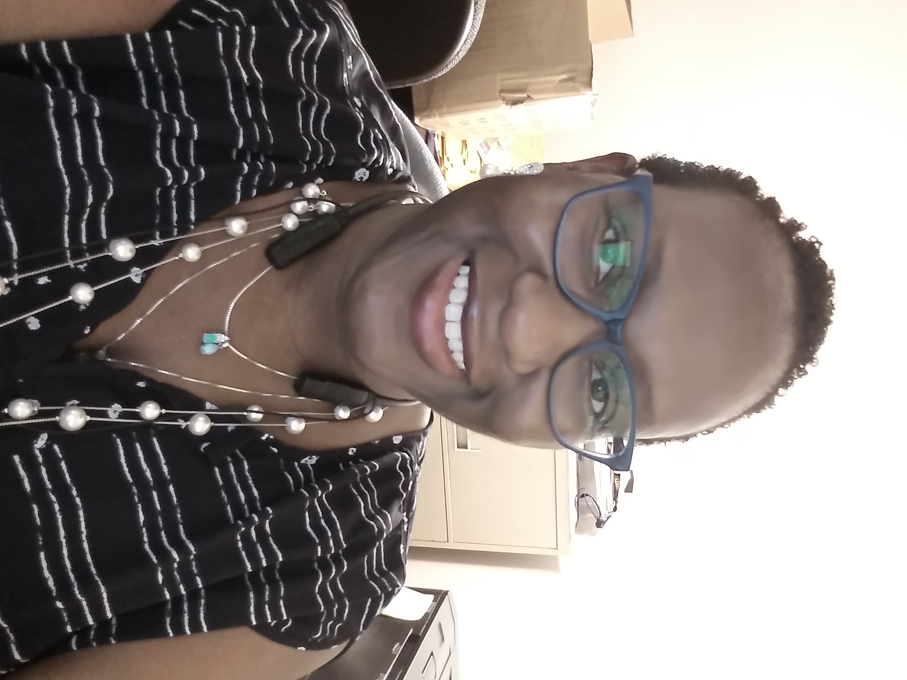

About

My name is Tynesia Davis, I was born in Bronx, NY but raised in Mid-Michigan. I recently graduated from the University of Michigan-Flint with my Bachelor of Applied Science degree. My concentrations were pyschology and computer science. Unfortunately, my computer skills were quite dated. I decided to join this boot camp to enhance my marketability and change careers.